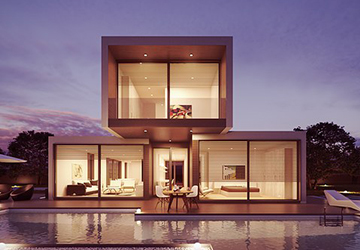

유커 시크릿 멤버
유커의 꾸준한 활동과 답방이 검증된 멤버들입니다.
-
톡톡와쩡 Toktokwajjung
40대 아줌마가 들려주는 톡톡 튀는 동안 피부 만들기 정보가 한가득~
채널 방문 -
백수감독 칼박
일상, 여행, 맛집, 술방 등 소중한 일상을 기록하고 공유하는 백수감독 칼박
채널 방문 -
새침 TV
일상, 여행, 맛집, 술방 등 소중한 일상을 기록하고 공유하는 애주가 브이로그 유튜브 채널
채널 방문 -
Life of a Wannabe Fit Girl
활기차고 유쾌한 미국생활 스토리, 미국의 일상과 여행, 운동, 먹방을 통해 소통해요
채널 방문 -
빠스 TV
종합 게임, PC 최고 사양 게이머, PC 게임, PS4 게임, 장르 불문 모든 게임을 즐기는 채널
채널 방문 -
BoVely_보블리
미국에서 박사연구원으로 일하고 있는 병원의 일상. 강아지 Boss와의 이야기.
채널 방문 -
PlayStory DDO DDO
부모가 장난감 및 간단한 놀이로 아이들과 즐거운 시간을 보내요
채널 방문 -
세다리TV
안녕하세요 (세)상의 모든 것을 (다) (리)뷰하는 세다리TV 입니다.
채널 방문 -
후니후니
장난감에 애어른이 없다. 혼자서 장난감을 재밌게 가지고 노는 아재의 키덜트 채널
채널 방문 -

미친킹콩
미친킹콩의 운동으로 공격적인 소통을 하는 채널, 운동의 생각과 방식을 공격적으로 소통하자
채널 방문 -
치악산마타리
아들 둘과 백두대간 산행을 하며 자생하는 백두대간에서 약초에 대해 소개하는 채널
채널 방문 -
찐토리
자동차 이슈 및 최신뉴스와 친근한 일상 이야기로 편하게 즐기는 채널입니다.
채널 방문 -
여주개미
시골에 살면서 자연농사를 통해 나만의 식단을 위해 채소를 재배하고 있습니다.
채널 방문 -
Paran Music
자작곡 위주로 올리고 리믹스 업로드합니다 저작권 없는 음악 편하게 듣자
채널 방문 -
티리티리
신비로운 각양각색의 목소리로 연기와 더빙을 사랑하시는 모든 분들을 위한 채널
채널 방문 -
요올리
3d펜으로 평소 만들어보고 싶은 것들을 만들어보는 금욜리(Gold)
채널 방문 -
패션유튜버 헨봄TV
체형도 피부톤도 모두 다른 저희 자매가 입어보고 비교해서 리뷰
채널 방문 -
전슈TV
피팅모델 전슈가 들려주는 촬영현장과 궁금점 그리고 전슈의 일상
채널 방문 -
글로리월드
두마리 고양이 채널 입니다! 고양이 이름은 흰색고양이 산이 , 회색고양이 가리 입니다.
채널 방문 -
나라의 발견
여행을 일상처럼 기록하는 브이로그, 갬성 폭발하는 일상을 공유해요
채널 방문 -
발강이 TV
발강이의 PS4, VR, 다양한 게임 플레이, 공략, 리뷰 채널입니다.
채널 방문 -
MAKIHOKI TV
천방지축 한일 부부의 예능처럼 만드는 부부의 추억, 한일부부 버라이어티
채널 방문 -
yosi김빠로
필리핀 마닐라에 살고 있는 김빠로의 채널입니다! 필리핀을 알려드릴게요
채널 방문 -
미니미TV
미니미의 쇼핑 채널 입니다. 제가 이뻐서 또는 혹해서 구매한 리스트♥
채널 방문 -
치도루크tv
게임은 주로 로스트아크와 피파4등 다양한게임을 주로 하려고합니다
채널 방문 -
Chris Jung
다양한 게임 플레이 영상과 재미있는 일상의 체험을 보여드리겠습니다.
채널 방문 -
뒷북 [Back Tv]
사랑스러운 우리 방탄소년단, 그 사랑의 기둥 아미들의 쉼터, BTS 영상 및 다시보기 채널입니다.
채널 방문 -

멋진최의 인테리어멋진최tv
멋스러운 집을 꾸며주는 인테리어 전문가 멋진최의 인테리어 꿀팁 대방출
채널 방문